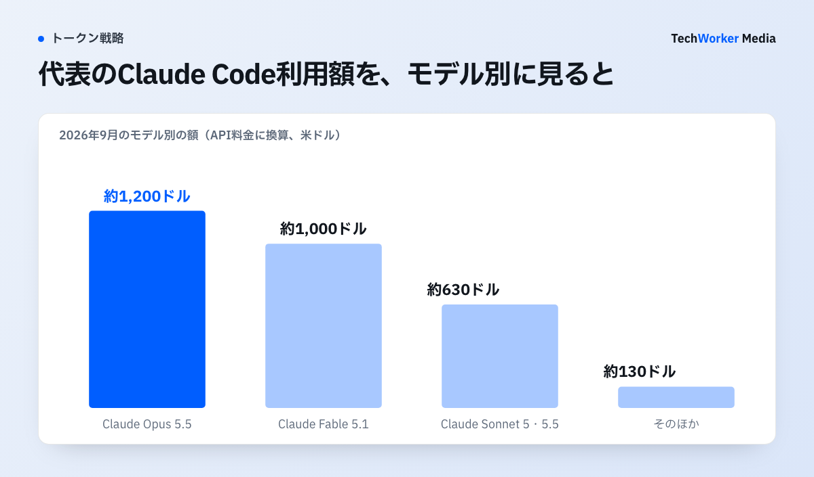
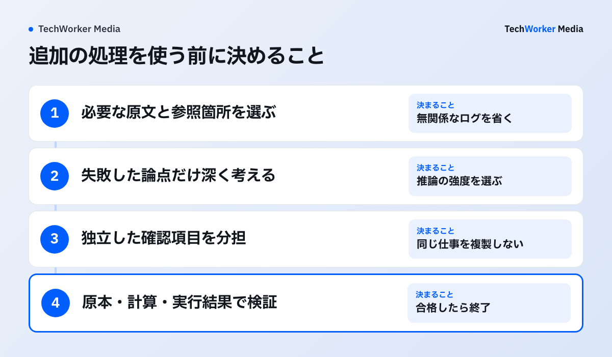

トークンマキシングとは何ですか？
難しい仕事へ追加の資料、推論、独立した検証を使う考え方です。トークンを増やすだけで、品質が上がるとは限りません。
トークンとは、AIが文章を処理するときの最小単位です。トークンマネジメントは、いかに少ないトークンで回すかを追います。この記事では、マキシングを「必要な検証へ追加の処理を使う」判断として扱います。一般に統一された性能指標の名前ではありません。
重要な意思決定の調査、大規模なコード改修、精度が問われる分析では、手戻りのコストがトークン代を大きく上回ります。トークンを絞って精度を落とすより、追加の検証が有効な場合があります。ただし、同じ誤りを繰り返すだけなら、処理を増やしても手戻りは減りません。
2026年のモデルは、100万トークンのコンテキストを標準料金で扱えます。長文の追加料金はありません。Opus 5.5などが該当します。深く推論させることもできるため、振り切る選択肢が現実的になりました。
TechWorkerの過去記録では、上位モデルをどう使っていましたか？
2026年9月のClaude Code記録では、作業ごとにモデルを分け、入力の多くをキャッシュから読み出していました。現在の運用とは分けて掲載します。

代表の古野の端末記録をccusageでAPI料金に換算した既存の報告値は、2026年9月14日〜30日の17日間で約3,000ドル、1日平均約180ドルです。少ない日は約4ドル、多い日は約850ドルでした。9月の入力の約97%はキャッシュ読み出しでした。モデル別の既存報告値は、Opus 5.5が約1,200ドル、Fable 5.1が約1,000ドル、Sonnet 5・5.5が約630ドル、そのほかが約130ドルです。今回、元ログは再集計していません。
当時はClaude Codeを開発や資料作成に使い、作業に応じて上位モデル、Sonnet、Haikuへ分けていました。これは過去の利用記録です。2026年10月のTechWorkerはCodexを中心にGPT系を使う体制へ移っています。当時のClaude運用、応答ごとの料金表示、毎朝のSlack通知が現在も続くことを示しません。
API換算額は、定額契約で実際に支払った金額ではありません。契約費、追加従量、API請求を混ぜずに照合してください。この例はモデル分担と利用量の偏りを説明するもので、費用削減率や成果の改善を実証した値ではありません。
トークンを振り切るには、どんな手順で進めますか？
必要な原文、推論の強度、独立した確認、実行結果の検証を選んで使います。合格条件を満たしたら停止します。

- 必要な資料を選んで渡します。判断に関係する原文と参照箇所を残し、無関係なログまで全部入れません。入力上限の大きさと、必要な情報を正しく使えることは別です。
- 深く推論させます（adaptive thinking）。2026年のClaudeは、固定の思考予算でなくeffort（low〜max）で深さを調整します。まず通常設定で失敗した論点を確認し、必要な処理だけ強度を上げます。利用できる段階はモデルごとに確認します。
- マルチエージェントで並列に走らせます。観点を分けて複数のAIを同時に動かし、一方のAIは引用元との一致を、もう一方は計算や抜けた条件を確認します。担当者が両方の結果を照合します。
- 反復・自己検証のループを回します。生成後に原本、計算、実行結果など別の根拠で確認します。AIの自己評価だけを合格理由にしません。合格条件を満たし、新しい失敗がなければ終了します。
トークンマキシングがうまくいかない例には、どんなものがありますか？
すべてに振り切る、単純な反復に使う、トークン代が成果を上回るのに続ける、の3つが典型です。
- すべての処理で振り切る。トークンマキシングは、品質が金額を上回る局面に限定します。ほかの処理はmax_tokensやBatch APIで絞ります。
- 大量・単純・反復の処理で振り切る。1件あたりの価値が小さい処理は、トークンマネジメントの領域です。
- トークン代が得られる成果を上回るのに続ける。投資が回収できない状態です。この場合は絞る側に戻します。
振り切る場面と絞る場面は、どう見分けますか？
判断ミスの手戻りがトークン代を上回る局面は振り切り、トークン代が成果を上回る局面は絞ります。
| 局面 | 取るべき戦略 | 理由 |
|---|---|---|
| 大量・単純・反復の処理 | マネジメント | 1件あたりの価値が小さい |
| 重要な意思決定・調査・本番品質 | マキシング | 精度がそのまま成果になる |
| 判断ミスの手戻りがトークン代を上回る | マキシング | 手戻りの方が高くつく |
| トークン代が得られる成果を上回る | マネジメント | 投資が回収できない |
この切り分けは運用の提案です。追加処理による成果の改善率を測定したものではありません。自社で同じ課題を試し、正答、所要時間、手戻り、使用量を比較して採否を決めます。
よくある質問
すべてには使わず、品質が金額を上回る局面に限定します。ほかはmax_tokensやBatch APIで絞り、トークンマネジメントと併用します。
2026年のClaudeは、adaptive thinkingとeffortで思考の深さを指定します。effortはlow / medium / high / xhigh / maxの5段階です。利用できる強度はモデルごとに異なります。通常設定で残った失敗を確認してから上げます。
はい。Opus 5.5などは100万トークンのコンテキストを標準料金で提供しており、長文に対する追加料金はありません。
同じ仕事を複製せず、独立した確認項目を分担します。役割を分けるだけで効果を保証するものではありません。まずは調査・レビューなど観点の分担から始めます。
次の一歩として、まず何から試せばよいですか？
手戻りのコストが大きい重要な調査や意思決定を1件選び、4つの手順で振り切って試すことから始めます。
- 手戻りのコストが大きい仕事を1件選びます。
- 関連資料をコンテキストに入れ、effortを上げて実行します。
- 大量・単純な処理は、これまでどおり絞ります。
どこで絞り、どこで振り切るかの設計は、TechWorkerが一緒に整理します。検討段階のご相談だけでも歓迎です。
この記事は、どの資料をもとにしていますか？
2026年10月3日に料金と推論制御の仕様を確認しました。自社の利用量は2026年9月の既存報告値です。追加のトークン、長い入力、複数エージェントが成果を改善する因果効果を実測したものではありません。